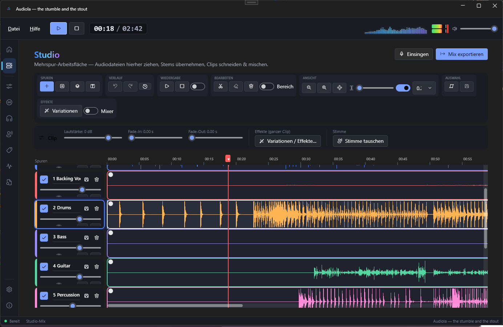
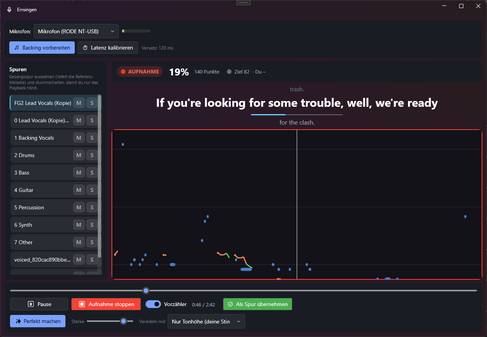
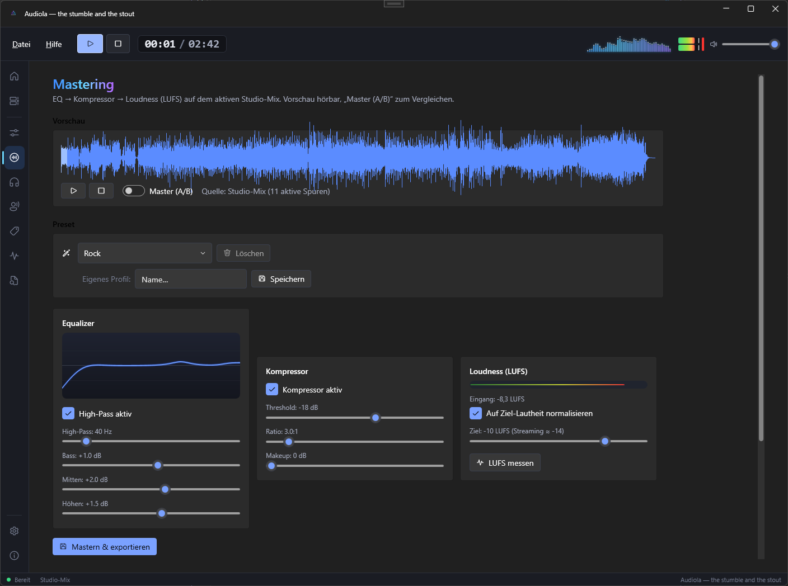
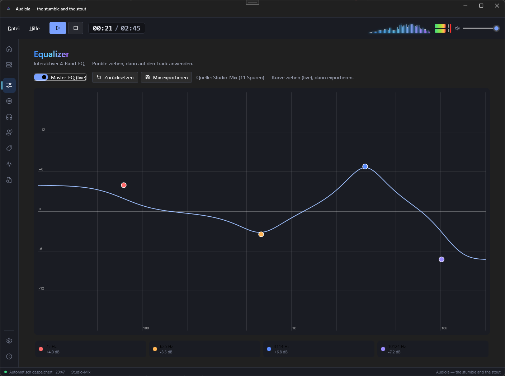
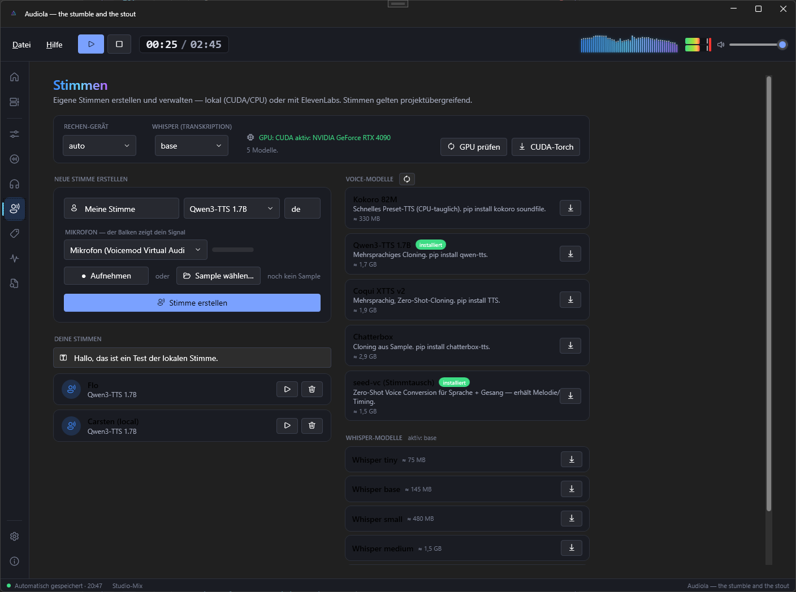
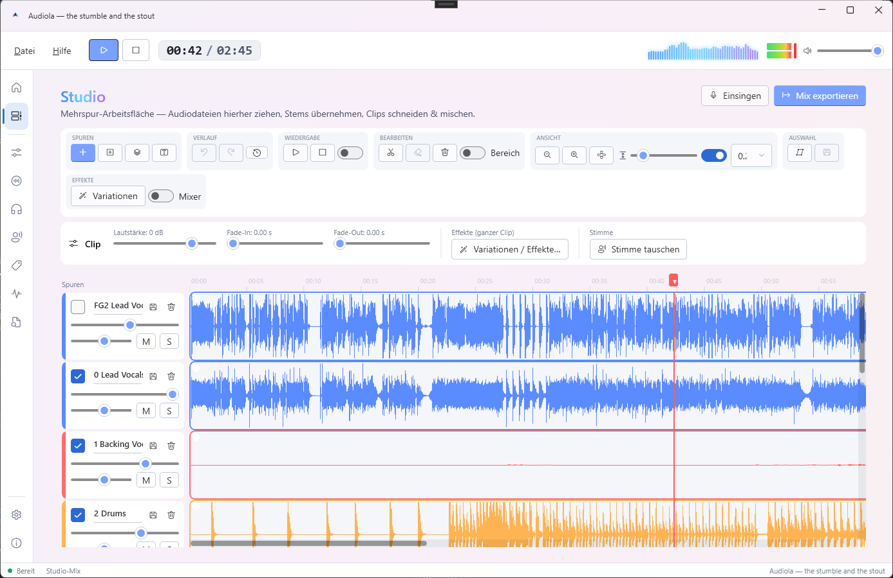
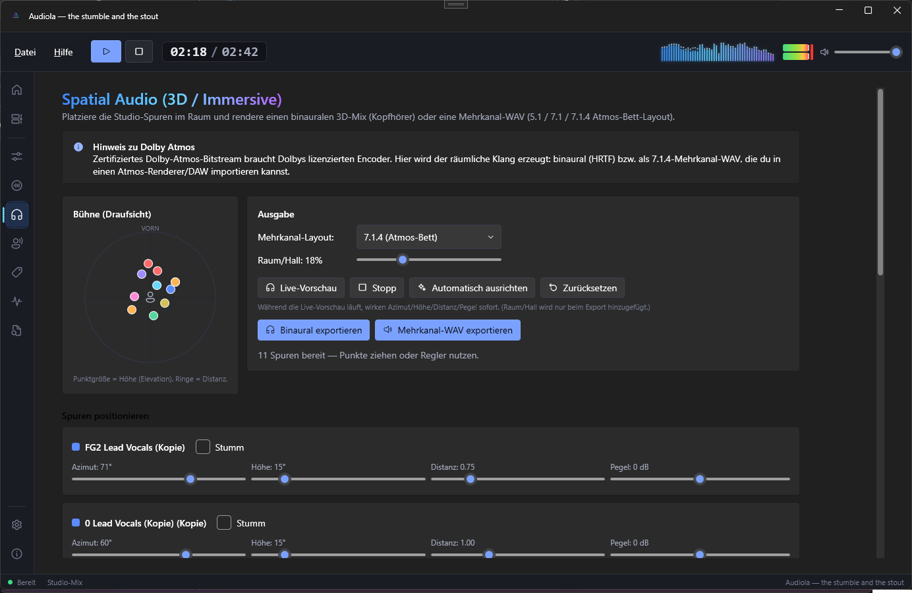

KI-Stem-Trennung
Gesang, Drums, Bass, Gitarre, Piano — Demucs zerlegt jeden Song lokal auf deinem Rechner. Ohne Cloud, ohne Upload.
FÜR WINDOWS · KOSTENLOS · OPEN SOURCE
Audiola zerlegt jeden Song per KI in seine Spuren, lässt dich arrangieren, einsingen, Stimmen tauschen und mastern — in einem Studio, das sich anfühlt wie eines.

Gesang, Drums, Bass, Gitarre, Piano — Demucs zerlegt jeden Song lokal auf deinem Rechner. Ohne Cloud, ohne Upload.
Clips schneiden, ziehen, faden, loopen. Undo-Verlauf, Raster, Bereichs-Effekte — eine echte Arbeitsfläche.
Karaoke-Ansicht mit Notenband und Punkten. „Perfekt machen" zieht deine Aufnahme sanft auf die Original-Melodie.
EQ, Kompressor und Ziel-Lautheit nach EBU R128 — mit Live-A/B-Vergleich und 14 Profilen von Streaming bis Club.
Eigene Stimmen klonen (lokal oder ElevenLabs), Text-to-Speech-Spuren, Stimmtausch pro Clip.
Spuren frei im Raum platzieren — immersives 7.1.4-Bett für Kopfhörer-Momente, die man nicht vergisst.
DAS STUDIO
Zieh eine MP3 rein und sie wird zur Spur. Trenn sie in Stems, schneide Clips am Playhead, verschiebe Parts zwischen Spuren, setz Fades mit einem Griff.
.audiola — alles in einer DateiEINSINGEN
Audiola macht aus jedem Song deine Karaoke-Kabine: Lyrics laufen mit, das Notenband zeigt die Original-Melodie, du siehst live, wie gut du triffst.

MASTERING
Der Mix geht durch EQ, Kompressor und Loudness-Normalisierung auf exakt die LUFS, die du willst. A/B-Schalter für den ehrlichen Vergleich, Wellenform mit Klick-Seek.

EQUALIZER & SPATIAL
Der interaktive 4-Band-EQ shaped den Studio-Mix live — Punkte ziehen, hören, fertig. Und wenn Stereo nicht reicht: Platziere jede Spur frei im Raum.

STIMMEN
Erstelle Stimm-Profile aus einer kurzen Aufnahme — lokal auf deiner GPU oder über ElevenLabs. Tausche die Stimme eines Clips, erzeuge Sprach-Spuren aus Text.

HELL & DUNKEL
Nachtschicht im dunklen Studio oder Tageslicht am Fenster — zieh den Regler.

GALERIE

AUS DEM HAUSE AUDIOLA
Die Karaoke-Bühne für deine Party. Song rein, Mikros verteilen, lossingen —
Lyrics und Noten kommen von selbst.
Jede/r mit eigenem Mikrofon und eigener Farbe — die Pitch-Linien tanzen live über das Notenband.
Aus Tags, .lrc, Audiola-Projekten — oder per KI-Erkennung. Jeder Song nur einmal: das Song-Gedächtnis merkt sich alles.
Punkte fürs Treffen der Original-Melodie, Combos für Serien. Wie damals — nur auf deinem Rechner.
Ganze Playlisten oder zufällige Songs, mehrere Runden, Zwischenstand — bis der Sieger feststeht.
Das komplette Studio: Stems, Timeline, Einsingen, Mastering, Spatial, Stimmen.
⭳ Audiola-Setup ladenDie Karaoke-Bühne: Mehrspieler, Notenband, Playlisten, Party.
⭳ Singola-Setup ladenAlle Versionen & Änderungen auf GitHub Releases. Für die KI-Stem-Trennung wird lokal Python + Demucs genutzt — der Einrichtungs-Assistent hilft beim ersten Start.
USED BY
BUILT WITH
Audiola nutzt Komponenten dieser Open-Source-Projekte.